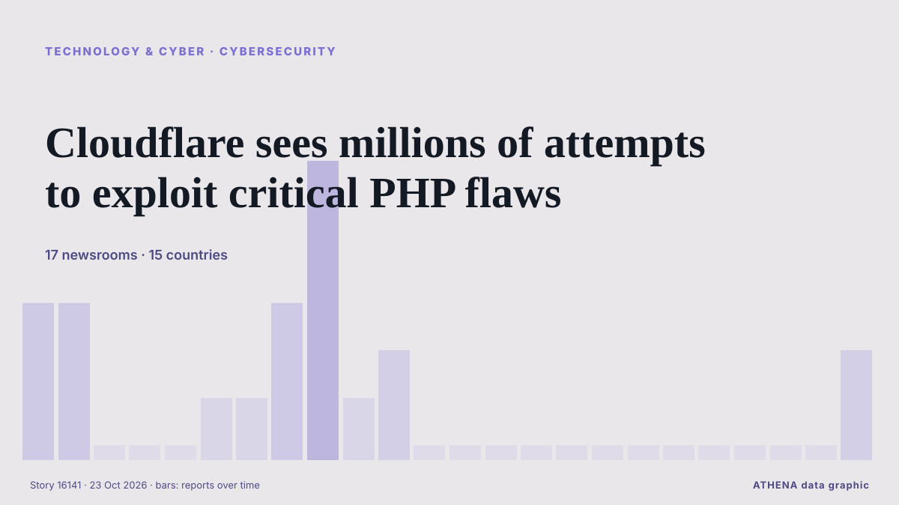

Cloudflare sees millions of attempts to exploit critical PHP flaws

Cloudflare has recorded millions of attempts to exploit two critical PHP vulnerabilities since details became public on Wednesday, according to CEO Matthew Prince. из The Next Web
Независимые источники: 17 изданий в 15 странах, с 21 окт.; первым сообщил The Straits Times; освещение затихло. ATHENA оценивает риск как умеренный (3.9/10), прежде всего из-за тяжести описываемого ущерба и географического и отраслевого охвата. Уверенность — 91 % (высокая); подтверждают независимые источники: 17 изданий, средняя надёжность источников — 74 %.
Почему это важно: События в технологиях и кибербезопасности формируют безопасность, конкуренцию и правила цифровой жизни.
Что изменилось: 2 новых сообщений от 2 редакций за 24 часа до 23 окт..
Заголовки приводятся на английском языке, как они были опубликованы.
Коротко в цифрах
Отобрано, оценено и написано по опубликованной методологии ATHENA. Ни один редактор не вмешивается в отдельные события. Как это создаётся ›
| 21 Oct 13:46 UTC | 3 |
|---|---|
| 21 Oct 15:46 UTC | 3 |
| 21 Oct 17:46 UTC | 0 |
| 21 Oct 19:46 UTC | 0 |
| 21 Oct 21:46 UTC | 0 |
| 21 Oct 23:46 UTC | 1 |
| 22 Oct 01:46 UTC | 1 |
| 22 Oct 03:46 UTC | 3 |
| 22 Oct 05:46 UTC | 6 |
| 22 Oct 07:46 UTC | 1 |
| 22 Oct 09:46 UTC | 2 |
| 22 Oct 11:46 UTC | 0 |
| 22 Oct 13:46 UTC | 0 |
| 22 Oct 15:46 UTC | 0 |
| 22 Oct 17:46 UTC | 0 |
| 22 Oct 19:46 UTC | 0 |
| 22 Oct 21:46 UTC | 0 |
| 22 Oct 23:46 UTC | 0 |
| 23 Oct 01:46 UTC | 0 |
| 23 Oct 03:46 UTC | 0 |
| 23 Oct 05:46 UTC | 0 |
| 23 Oct 07:46 UTC | 0 |
| 23 Oct 09:46 UTC | 0 |
| 23 Oct 11:46 UTC | 2 |
| 22 Oct 07:04 UTC | 5.4 |
|---|---|
| 22 Oct 10:07 UTC | 4.5 |
| 23 Oct 13:28 UTC | 3.9 |
Откуда эти цифры
Значимость
Риск
Уверенность
Освещение — кто сообщил и когда
заголовок в оригинале · открывает источник- The Straits Times · Сингапур · SingaporeGovernment websites go dark as vulnerabilities in programming language send shudder across internet
- Bangkok Post · Таиланд · ThailandPHP glitch sends shudders across internet
- The Straits Times · Сингапур · SingaporePHP developers issue updates fixing vulnerabilities that saw websites go offline
- The Straits Times · Сингапур · SingaporeExplainer: What is PHP and why did it take government websites offline?
- DW English · Германия · GermanyPHP developers say key patches available after global scare
- France 24 English · Франция · FranceGovernment and corporate websites go dark as AI exposes critical security flaws
- Al Jazeera English · Катар · QatarWorld leaders warn of security flaws found in PHP programming language
- Mainichi (English) · Япония · JapanVulnerabilities found in widely used PHP programming language
- CNA (Channel NewsAsia) · Сингапур · SingaporeCloudflare sees millions of exploit attempts after PHP disclosure
- Bangkok Post · Таиланд · ThailandWorld wide web worry: PHP drama explained
- The Straits Times · Сингапур · SingaporeCloudflare sees millions of exploit attempts after PHP disclosure
- BBC News · Великобритания · United KingdomWhat is PHP and why did it spark a global cyber-security scramble?
- The Korea Times · Республика Корея · South KoreaPHP security flaws alert Korean government, firms
- The Korea Times · Республика Корея · South KoreaWhat is PHP and why did it take government websites offline?
- Türkiye Today · Турция · TurkeyWebsites shut down globally as PHP flaws trigger millions of attack attempts
- Daily Mirror · Шри-Ланка · Sri LankaWhat is PHP and why did it spark a global cyber-security scramble?
- NL Times · Нидерланды · NetherlandsSome important Dutch websites still offline after PHP issues
- Indian Express · Индия · IndiaPHP security alert: What US and Indian government warnings mean for websites
- RTÉ News · Ирландия · IrelandCompanies and govts step up cyber defences after PHP flaw
- Politico Europe · Бельгия · BelgiumHackers launch ‘millions’ of attempts to exploit global PHP cyber flaw
- Baltic News Network · Латвия · LatviaPHP: what it is and why everyone is fixing it now
- The Next Web · Нидерланды · NetherlandsCloudflare sees millions of attempts to exploit critical PHP flaws